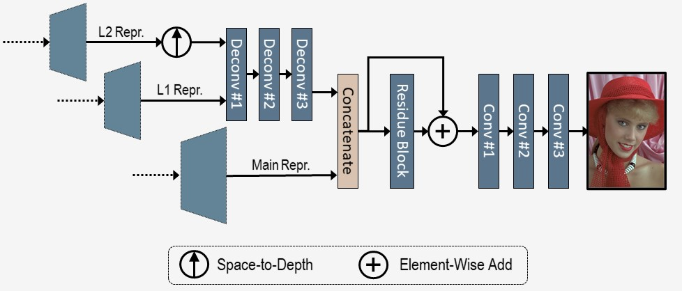

Approaches to image compression with machine learning now achieve superior performance on the compression rate compared to existing hybrid codecs. The conventional learning-based methods for image compression exploits hyper-prior and spatial context model to facilitate probability estimations. Such models have limitations in modeling long-term dependency and do not fully squeeze out the spatial redundancy in images. In this paper, we propose a coarse-to-fine framework with hierarchical layers of hyper-priors to conduct comprehensive analysis of the image and more effectively reduce spatial redundancy, which improves the rate-distortion performance of image compression significantly. Signal Preserving Hyper Transforms are designed to achieve an in-depth analysis of the latent representation and the Information Aggregation Reconstruction sub-network is proposed to maximally utilize side-information for reconstruction. Experimental results show the effectiveness of the proposed network to efficiently reduce the redundancies in images and improve the rate-distortion performance, especially for high-resolution images.
Fig. 1. Overall architecture of the multi-layer image compression framework. The probability distribution of the most inner layer of hyper-prior is approaximated with a zero-mean Gaussian distribution, where the scale values σ are channel-wise independent and spatially shared trainable parameters.
Fig. 2. Information aggregation subnetwork for the reconstruction of the decoded image. The main latent representation (Main Repr.) and the two layers of hyper representations (L1 Repr. and L2 Repr.) are aggregated for the reconstruction.
Fig. 3. RD Curve on Kodak Dataset.
Fig. 4. RD Curve on Tecnick Dataset.
Fig. 5. Comparison on visual quality with JPEG and BPG.
Paper: coming in February.
Posters: coming in February.
Code: available soon.